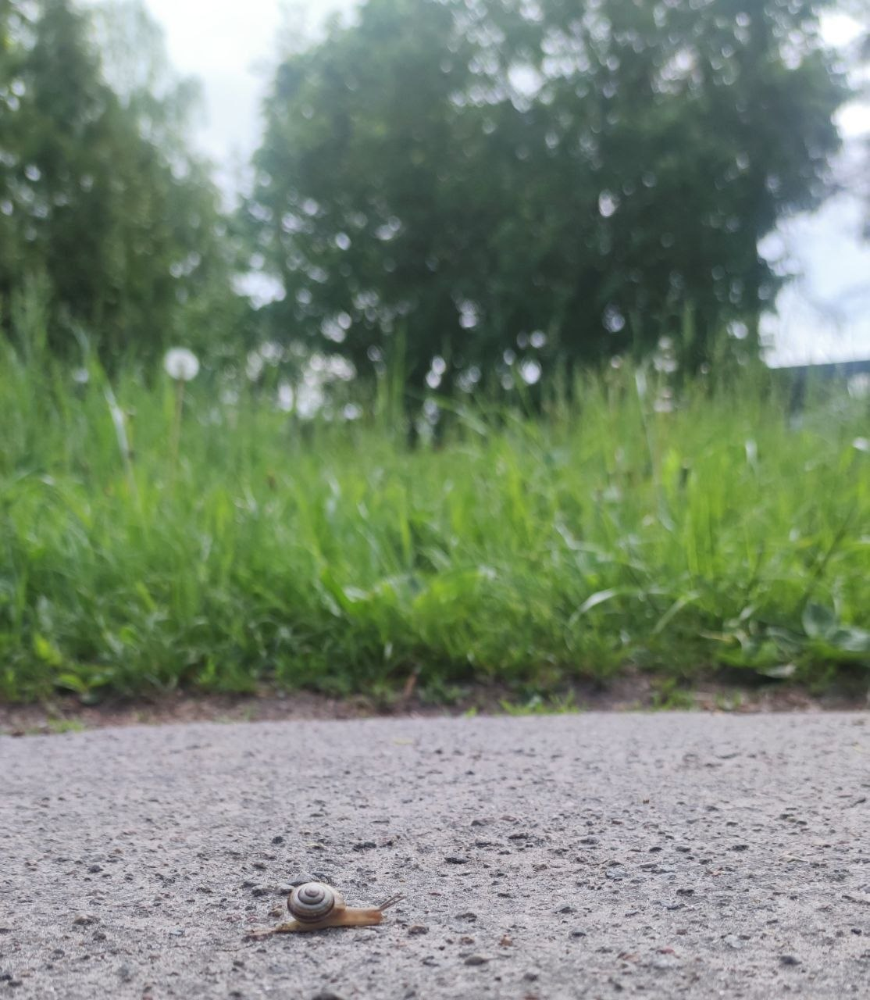
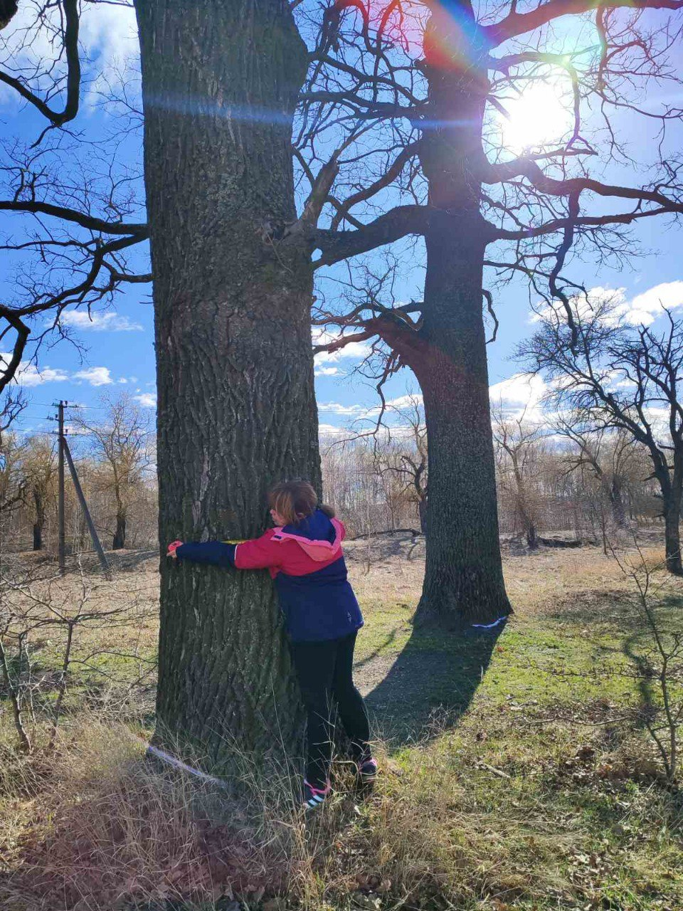
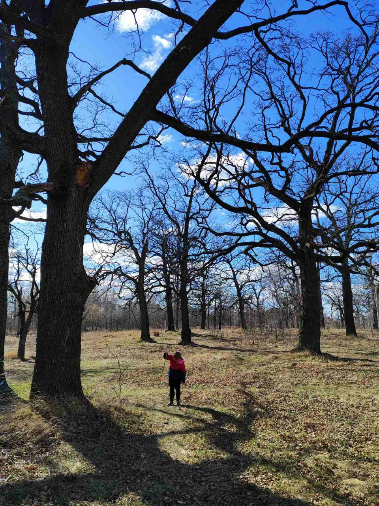
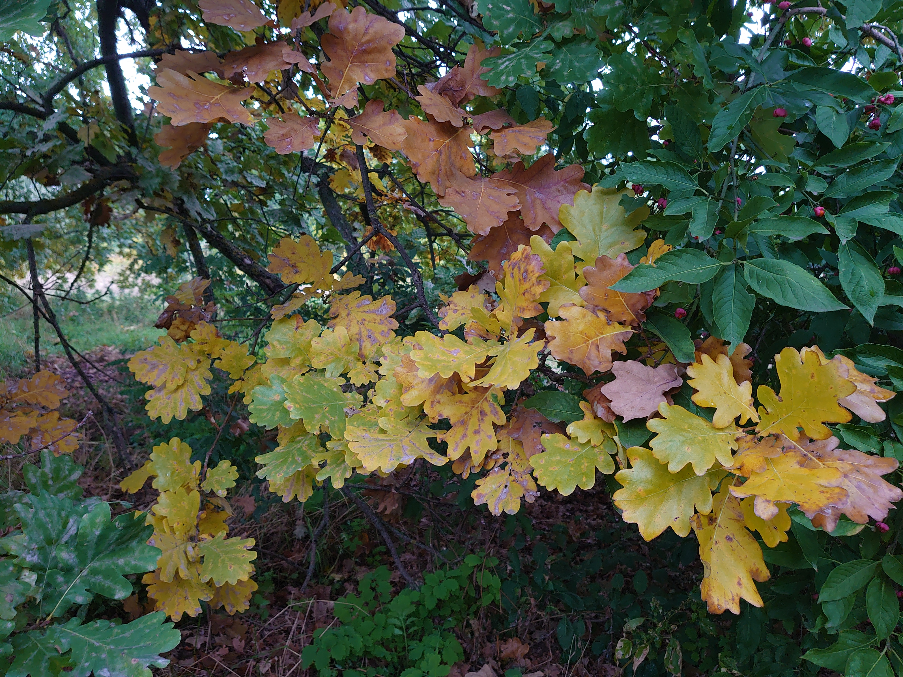

Dr. Andrii Kruhliak, film photography in original form, 2025
Dr. Andrii Kruhliak, film photography in original form, 2025
Ancient Oaks of Chubynske
Living Biocultural Heritage of the Middle Dnipro Forest-Steppe
Scroll to explore
Dr. Andrii Kruhliak, film photography in original form, 2025
Living Biocultural Heritage of the Middle Dnipro Forest-Steppe
The nationally significant landscape reserve "Khutir Chubynskoho" is located in the village of Chubynske, Boryspil district, Kyiv region, just 15 km from Kyiv. Established in 1994, the reserve encompasses a unique area of old-growth oak grove — one of the few surviving fragments of the historical forest-steppe landscape of the Middle Dnipro region.
The ancient oaks, approximately 200–300 years old, are living witnesses to the natural and cultural history of this territory. They have survived under intense anthropogenic pressure and rapid urbanization around Kyiv, remaining vital elements of the region's biocultural heritage.
Since 1975, the Institute of Animal Breeding and Genetics named after M.V. Zubets of NAAS has been operating in the village of Chubynske. The institute's scientists support initiatives in environmental education and promotion of the reserve's natural heritage, fostering ecological awareness and attention to the preservation of local natural landscapes.

At nature's pace — without haste
Spring beneath the ancient crowns
.jpg)




The summer silence of the primeval oak grove

.JPG)
.JPG)
.JPG)

The forest-steppe of the Middle Dnipro region is one of Ukraine's characteristic historical landscapes — a space where open steppe territories and broadleaf forests interact. It is here that the natural and cultural features of the region were shaped over centuries, where nature and human memory existed in close interconnection.
The ancient oaks of Chubynske are remnants of ancient natural ecosystems that once covered a much wider area of the Left Bank of the Dnipro. Today, they are preserved as rare fragments of a historical landscape amid agricultural territories, transport infrastructure, and suburban development of the Kyiv metropolitan area.
These trees are not only important natural objects but also symbols of endurance, resilience, and the continuity of landscape memory.

Autumn light of warm gold


The territory of the reserve is closely connected with the name of Pavlo Platonovych Chubynskyi (1839–1884) — a prominent Ukrainian ethnographer, folklorist, public figure, and author of the words of the State Anthem of Ukraine.
In 1861, Pavlo Chubynskyi's father, Platon Ivanovych Chubynskyi, acquired land near Boryspil, where the Chubynskyi farmstead was established. Soon a house, estate, and garden appeared here, and the farmstead itself became an important center of Ukrainian intellectual and cultural life in the second half of the 19th century.
The Chubynskyi household gathered representatives of the Ukrainian intelligentsia, including Mykhailo Starytskyi, Mykola Lysenko, Mykhailo Drahomanov, Pavlo Zhytetskyi, Fedir Vovk, and other prominent figures of Ukrainian culture and science.
Today, the ancient oaks of the reserve remain living witnesses to the history of this territory — a natural memory of the place where landscape, culture, and Ukrainian identity came together.
Winter graphics of oak silhouettes
This project is a continuation of initiatives in environmental education and promotion of the natural heritage of the Chubynske village community.
In December 2024, the initiative group of the Institute of Animal Breeding and Genetics named after M.V. Zubets of NAAS, led by Dr. Oksana Shcherbak, received support under the Grants for Development of Small Community Projects program.
We sincerely thank the interuniversity AgriSciences Platform, the Czech University of Life Sciences Prague (CZU), and the Government of the Czech Republic for supporting the development of environmental education for Ukrainian communities.
This first step became an important beginning for further work on projects of environmental communication and digital representation of the natural heritage of Chubynske.